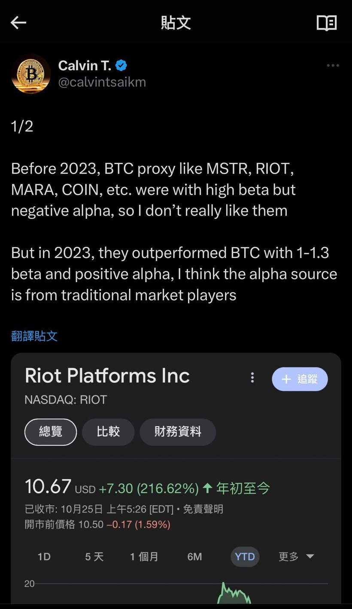
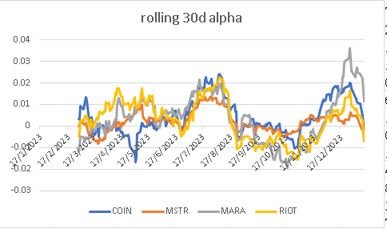
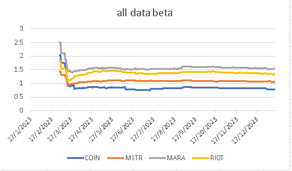

一直有看我專欄文章的朋友都會知道，我常說crypto好炒，容易賺錢。
舉例，1月3日大跌後，我在Twitter指，Matrixport的report是廢的，現貨ETF即將面世。此外，BTC將在未來幾天跑贏其他altcoin。因為現貨ETF面世的話，BTC dominance一定會繼續上升。的確，後續幾天BTC dominance急升，而且，現貨ETF面世。
然後在Patreon指出，在現貨ETF面世時，則可long ETH short BTC，博資金由BTC輪動到ETH去。的而且確，ETH/BTC由0.05急升至0.06，足足20%。
我當然講到做到，不打嘴炮。盈利大約10萬美元。
再者，更早前在Twitter指，若持有miners等等BTC proxy，應會在現貨ETF面世時跑輸大市。
請看下列的Twitter screenshot：

Screeshot的tweet指出，之所以BTC proxy會在2023年跑贏BTC，是因為傳統資金沒方法購買BTC，只好依賴proxy，如MSTR、COIN、MARA、RIOT等等。一旦現貨ETF通過，傳統資金必定會從proxies們抽出，並泊入現貨ETF中。
早在2023年10月尾已在Twitter提醒大家。
此時，現貨ETF出現了，一起來看看proxies們的表現。
MSTR：
COIN：
MARA：
RIOT：
平均下跌足足超過20%，證明看法正確。
有朋友趕及在宣布推出現貨ETF時沽空proxies們，賺了不少。
除了直接看proxies們的表現外，我們也可以來做些更詳細的分析。
我拿來了上述四大BTC proxies，與BTC表現作對比。先看看過去1年的rolling 30days的beta：
Coinbase平均beta為0.9，MSTR為1.1，MARA為1.6，RIOT為1.4。即proxies們的槓桿都在1附近。坊間有很多KOL指，proxies們之所以在2023升得多是因為槓桿大，完全大錯特錯。連Beta alpha也分不清，可悲也。
再來看看過去1年的rolling 30days的alpha：

2023年大部分時間為正alpha，尤其年尾，引證了傳統資金的湧入。但在最近，尤其在現貨ETF宣布發行後，alpha急跌，跌至近0，顯示了傳統資金的流出，引證了我的說法。
Beta及alpha除了可以看rolling 30days以外，也能看看anchored的beta及alpha，即數據慢慢累加。即2023年6月就用2023年1月至6月數據；2023年7月就用2023年1月至7月數據；2023年12月就用2023年1月至12月數據。
Beta如下圖：

大部分的beta也是1附近。
Alpha如下圖：
情況差不多，也是2023正alpha，而最近則下滑。
預期在proxies們的傳統資金還沒有完全逃出，因此，proxies們仍會跑輸BTC。預期alpha應重新降回至0。
如果在上周二或三就做空proxies們，並做多BITO以作對沖，總盈利如下：
平均回報超過1成，做short miners long BTC效果最好，回報超過2成！
Also, you now know why Michael Saylor sold his shares and then use the cash to buy BTC... 因為他也知道MSTR會被拋，因此他也在做我建議的long short策略：sell MSTR, long BTC...
小總結：
1. Crypto策略真的很易賺錢
2. 我Twitter有很多alpha (x.com/calvintsaikm)
3. 我預測的都命中
4. 我繼續看好ETH/BTC的pair
5. 我繼續保持miners會跑輸BTC的view